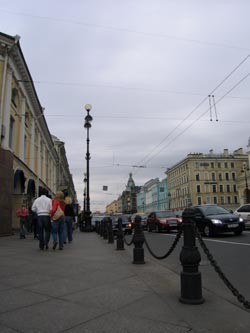

|  |
Travel to St. PetersburgThe best destination to reach St. Petersburg is the international airport Pulkovo-2 (LED). Many international airlines fly there regularly from around the world. How to obtain a Russian visaThe visitors need to get the entry visa to enter Russia for as many days as they stay in the country. To obtain a Russian visa you need to apply to a Russian consulate of your country. Check the documents you need to submit there. Anyhow to apply for a visa at the Russian consulate you need to receive an official paper of invitation to Russia. Hotel St. Petersburg will send you a tourist invitation when you register for the conference and reserve the hotel rooms for your stay there. Visa support procedures (paperwork for an official letter of invitation and formalities of local registration) costs 200 Rubles. Organizational committee has reserved the hotel rooms only for the days of ICTP-2008. If you are interested to stay in St. Petersburg longer than the days of the Conference (before or after the meeting) you can easily do this when you reserve your hotel room for those days. However, since July is a high season for tourists in the city the early reservation is highly recommended. You pay your hotel room and visa support procedures in cash (Rubles) or your credit card (Visa, Master Card) while you check in. Since the processing of your registration, sending an invitation, application for Russian visa in Consulate of your country and its processing there takes time, please, ensure to register, reserve the hotel early enough, so that all this paperwork would be completed in time before your departure for St. Petersburg. |
© 2008 Victor Karandashev